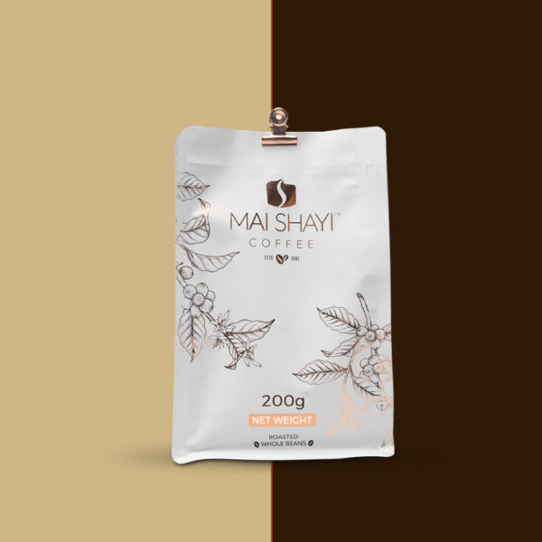
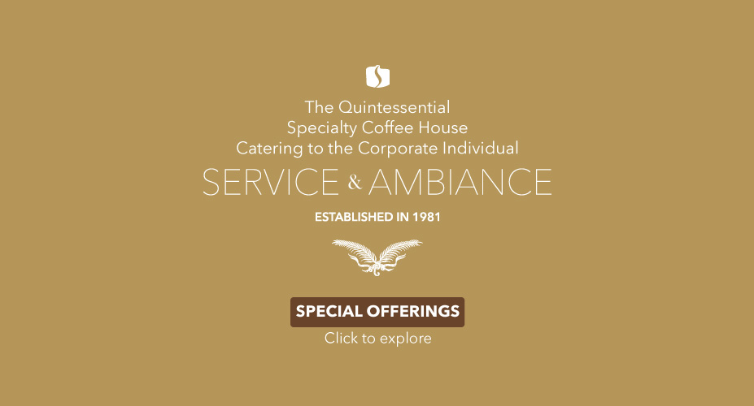
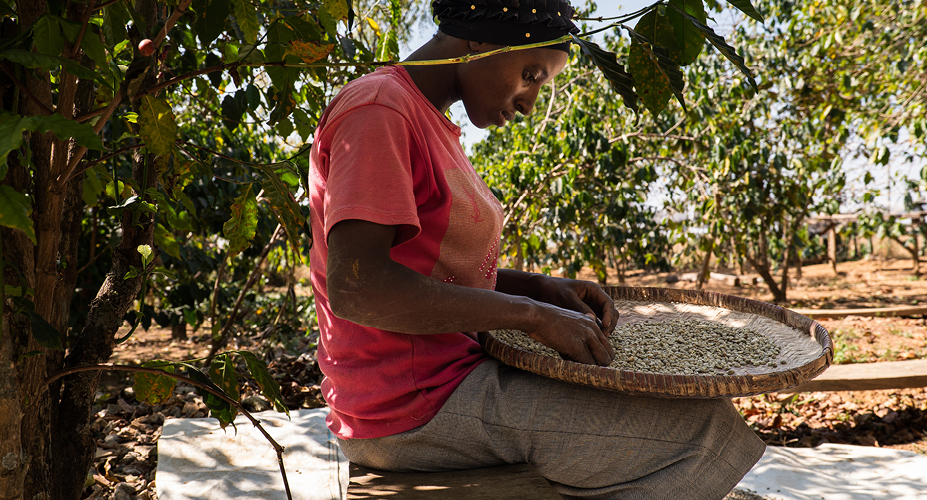

The Mai Shayi story
Nigerian coffee, presented with craft and clarity.
From cafe service to roasted bags and professional machines, Mai Shayi Coffee serves customers who want dependable coffee with a local point of view.
See the cafe experience
